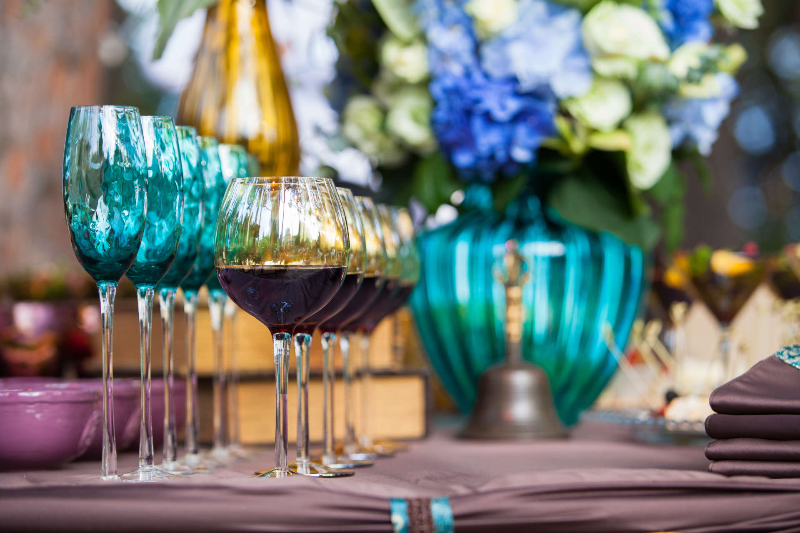
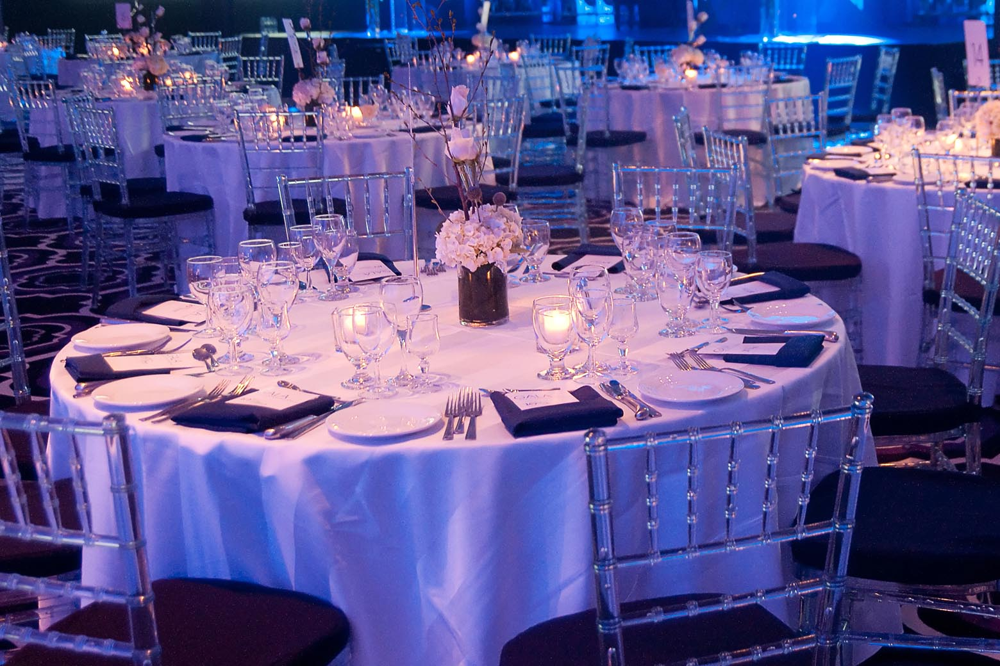
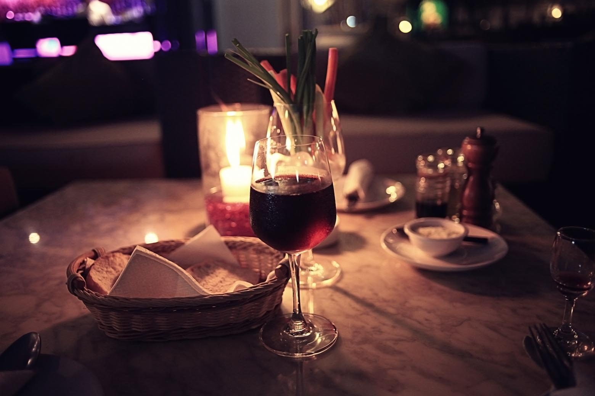
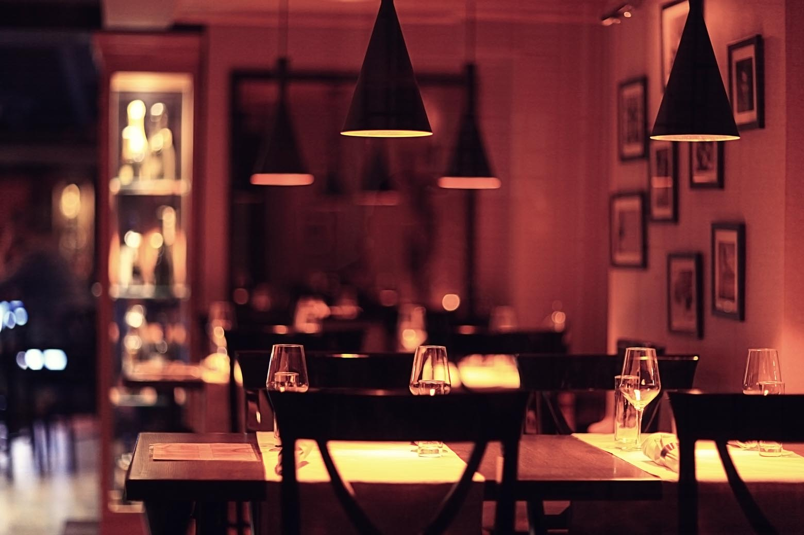
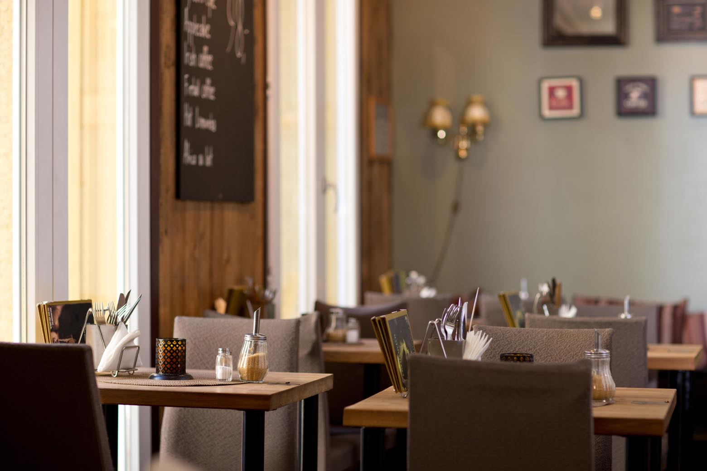
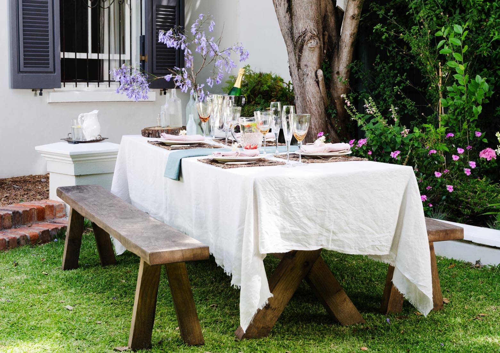

Hosting
Soho Gatherings

Latest Stories

Event Design
Setting the Mood in Blue

Entertaining
The Art of a Candlelit Dinner
Celebrations
A Better Welcome Drink
Venues
After-Dark Atmosphere
Hosting
How to Plan a Smooth Cocktail Reception
A thoughtful service plan keeps drinks moving and guests comfortable. Start with a focused menu, clear serving stations, and enough room for conversation to flow.

Interiors
Designing an Intimate Dining Room
Warm pools of light, closely grouped tables, and a restrained palette can make a dining room feel quietly inviting. The best spaces encourage guests to settle in and stay awhile.
Entertaining
Why the Bar Becomes the Heart of the Party
A welcoming bar gives every gathering a natural meeting place. Good lighting, a simple menu, and an uncluttered counter turn drink service into part of the experience.
Ideas
Creating a Café-Inspired Gathering
Borrow the easy rhythm of a favorite café with shared plates, relaxed seating, and drinks served at the counter. The familiar setup makes casual hosting feel considered.

Venues
Choosing a Venue with Natural Character
Natural light, warm materials, and flexible seating give a venue character before the decorating begins. Look for a space that supports the mood you want guests to remember.
Escape From Reality

Event Design
Small Floral Details with a Big Impact
A single vivid bloom can transform a simple chair into part of the celebration. Repeating small floral accents creates color and cohesion without overwhelming the setting.

Outdoor Living
A Relaxed Garden Table for Any Occasion
Soft linens, simple glassware, and seasonal flowers are all an outdoor table needs. Keep the arrangement unfussy so the garden and the company remain the focus.